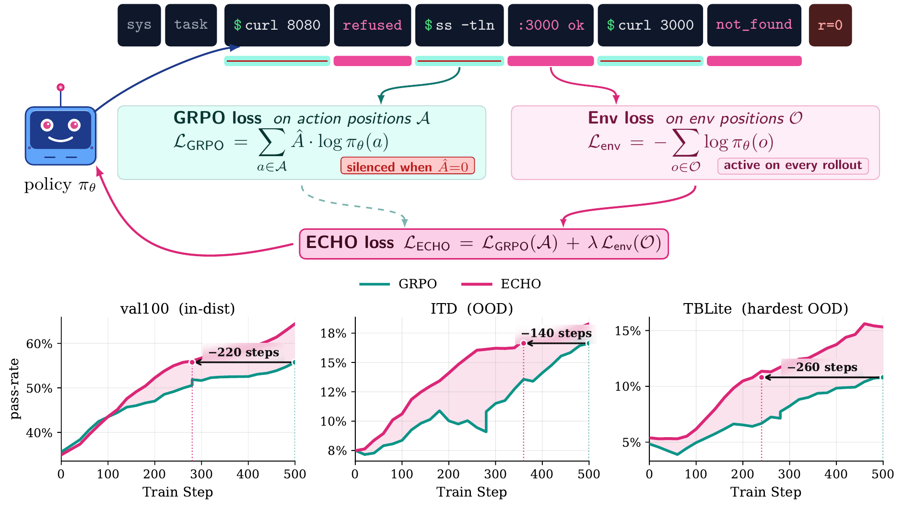
Vaish Shrivastava
I am a Senior Researcher at Microsoft Research in Redmond, where I work on reinforcement learning, reasoning, and computer-use agents.
I earned my Master's in Computer Science at Stanford University, advised by Percy Liang and was a student researcher at the Allen Institute for AI.
Previously, I was an Applied Scientist at Microsoft AI, working on efficient and personalized language models. I received my Bachelor's in Computer Science from Caltech.
Research
I'm interested in language models and agents that can learn from interaction, reason reliably, and use computation efficiently. My current work explores reinforcement learning for computer-use agents, learning world models from environment feedback, and reducing unnecessary reasoning. I also study how to estimate model confidence, improve consistency, and understand safety failures.
Publications
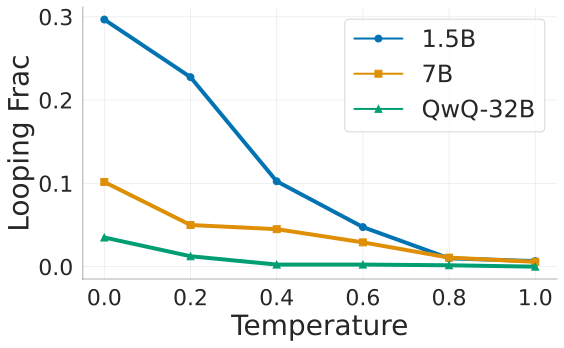
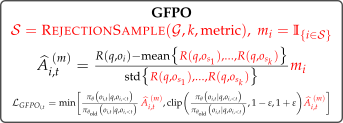
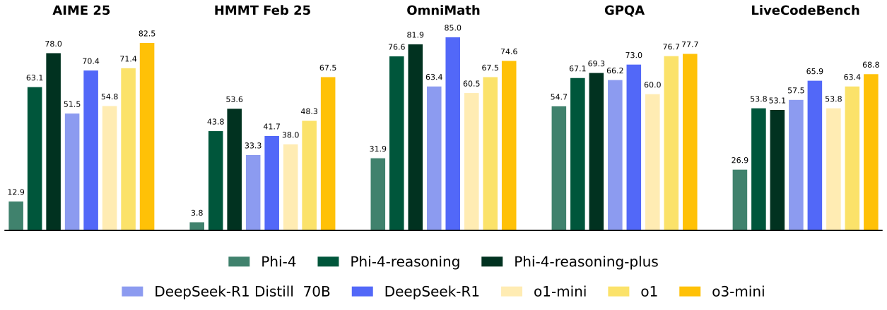
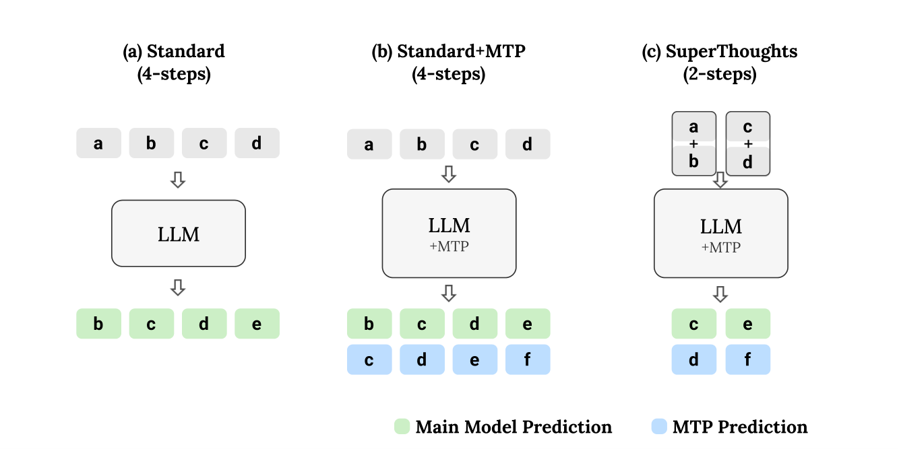
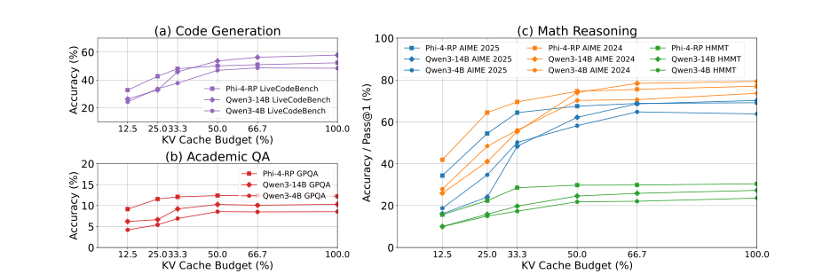
Not All Thoughts Matter: Selective Attention for Efficient Reasoning
NeurIPS Workshop on Efficient Reasoning 2025
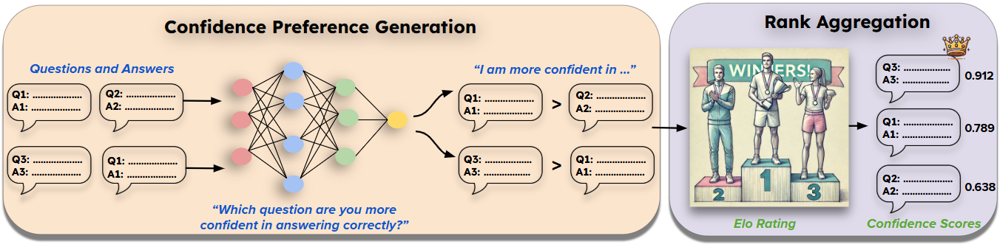
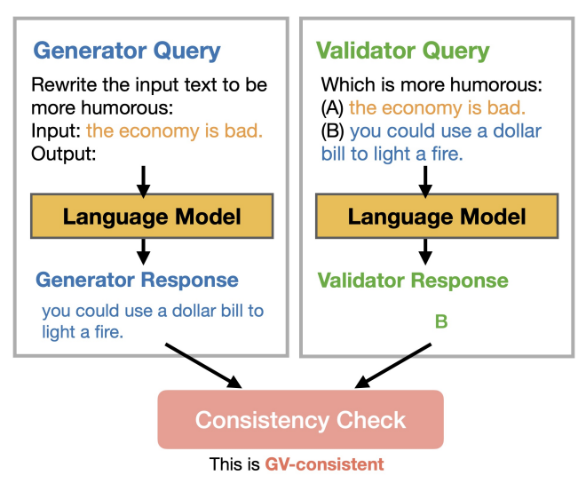
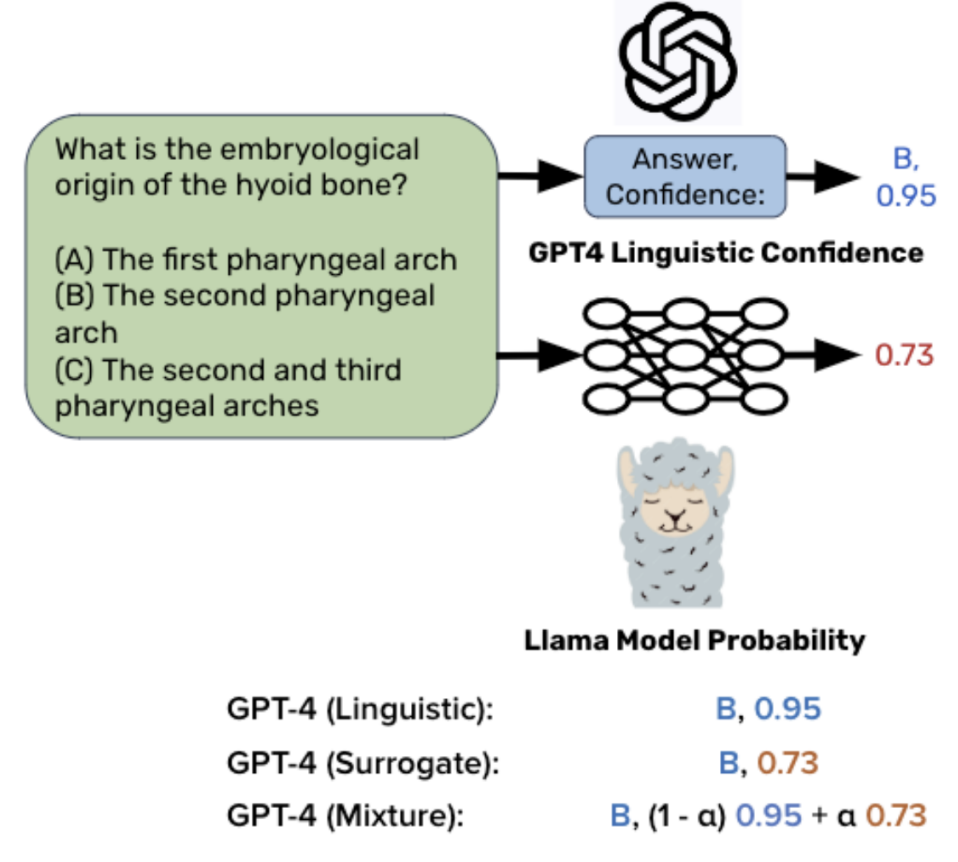
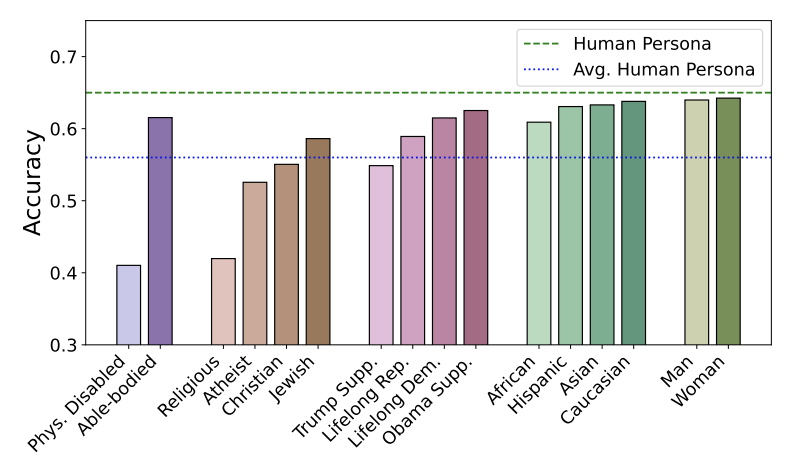
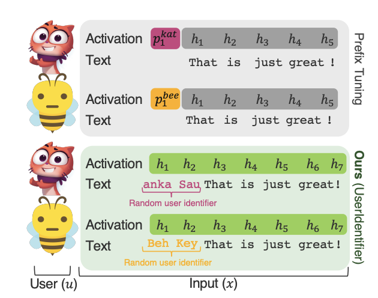
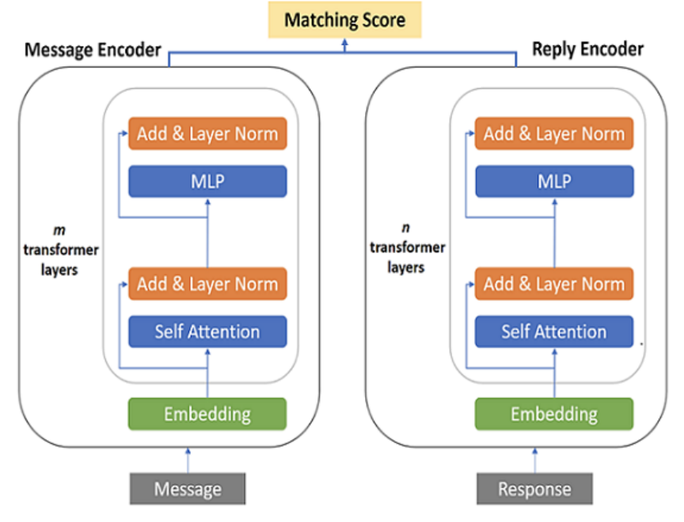
Exploring Low-Cost Transformer Model Compression for Large-Scale Commercial Reply Suggestions
*Equal contribution.
Microsoft Journal of Applied Research 2021